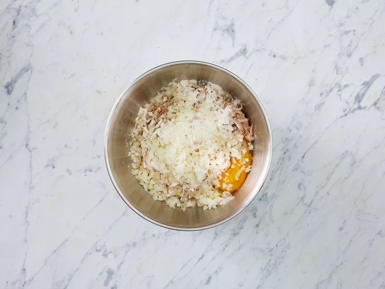

Homemade Crispy Hash Browns
Good, old-fashioned, restaurant-style hash browns. Perfect with hot pepper sauce and ketchup!

Ingredients
- 2 medium russet potatoes, shredded.
- ½ medium onion, finely chopped.
- 1 egg.
- 1 cup oil for frying, or as needed.
- Salt and pepper to taste.
Directions
- Gather all ingredients.

- Rinse shredded potatoes until water is clear, then drain and squeeze dry.
- Place shreds in a bowl and mix in the onion, flour, and egg until evenly distributed.

- Heat about 1/4 inch of oil in a large heavy skillet over medium-high heat. When oil is sizzling hot, place potatoes into the pan in a 1/2 inch thick layer. Cover the whole bottom of the pan, or make separate piles like pancakes.
- Cook until nicely browned on the bottom, then flip over and brown on the other side. It should take at least 5 minutes per side. If you are cooking them in one big piece, it can be cut into quarters for easier flipping.

- Remove from pan, and drain on paper towels. Season with salt and pepper and serve immediately.

- Serve hot and enjoy!
Main Page
Jump to top